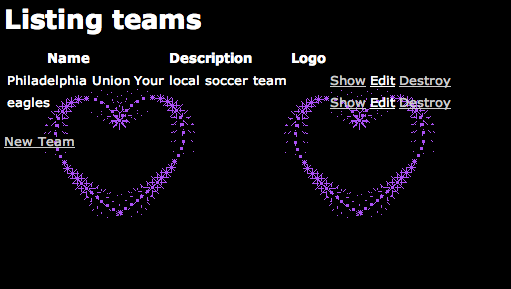

# Web Programming
slides.matschaffer.com/5
# Incoming, the Request
* Browser
* Web server (webrick)
* Router (`config/routes.rb`)
* Controller (`app/controllers`)
* \+ action (`def index`)
Router
*config/routes.rb*
LeagueApp:::Application.routes.draw do
resources :posts
end
Showing all routes
$ rake routes
GET /posts posts#index
POST /posts posts#create
GET /posts/new posts#new
GET /posts/:id/edit posts#edit
GET /posts/:id posts#show
PUT /posts/:id posts#update
DELETE /posts/:id posts#destroy
Arbitrary routes
# verb '/path' => 'controller#action'
get '/also_posts' => 'posts#index'
Controller
*app/controllers/posts_controller.rb*
class PostController < ApplicationController
def index
@posts = Post.all
end
end
# The Response
* Model (`app/models`)
* \+ View (`app/views`)
* Resulting HTML
* Rack Middleware
* Webrick
* Browser
# Model
class Post < ActiveRecord::Base
end
Views
*app/views/layouts/application.html.erb*
<html>
<head>
<%= stylesheet_link_tag "application" %>
</head>
<body>
<%= yield %>
</body>
</html>
*app/views/posts/index.html.erb*
<ul>
<% @posts.each do |post| %>
<li><%= post.name %>
<% end %>
</ul>
How can we capitalize the post name?
class Post < ActiveRecord::Base
def title
name.capitalize
end
end
<ul>
<% @posts.each do |post| %>
<li><%= post.title %>
<% end %>
</ul>
How can we style this page?

*assets/stylesheets/application.css*
body {
background-image: url('/assets/hearts.gif');
color: white;
}
*assets/stylesheets/scaffold.css.scss*
(Delete this)